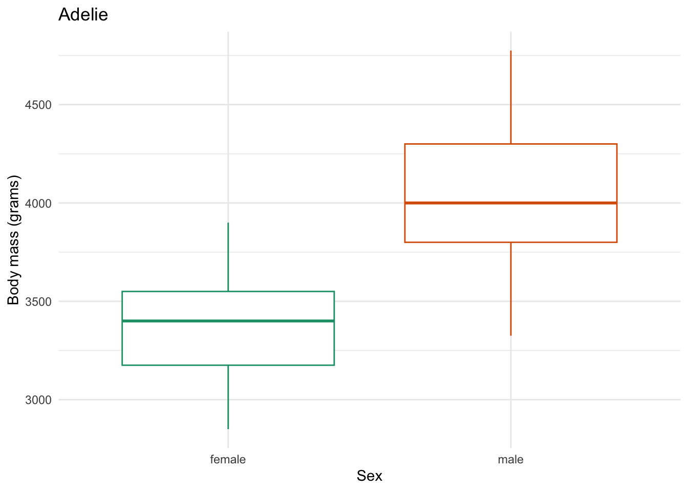
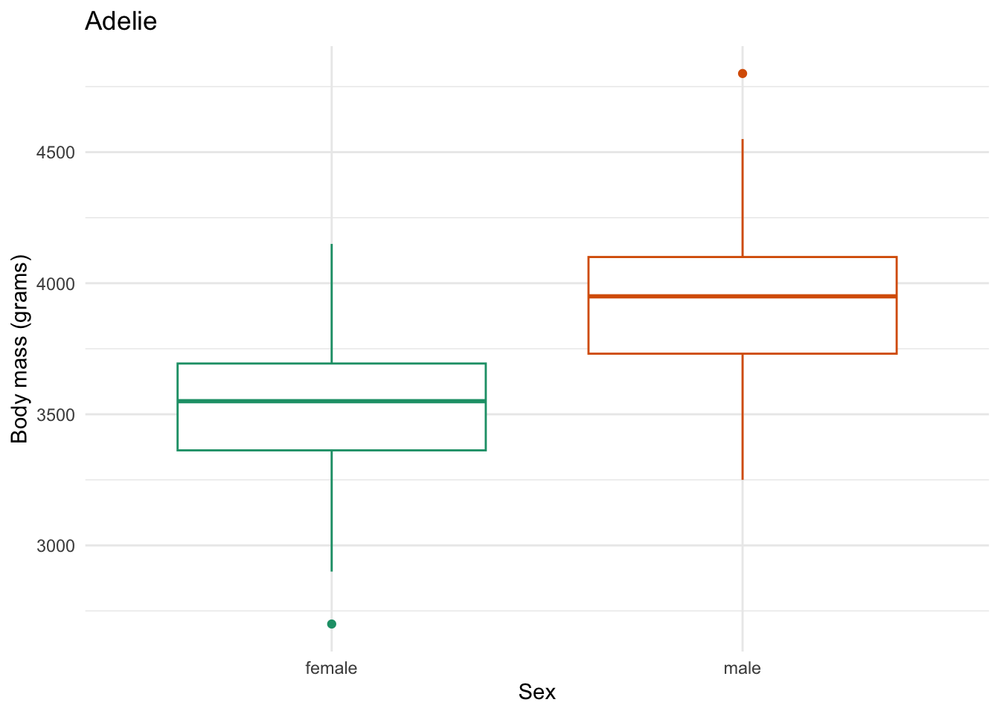

Iterating part I: for loops
In this first of a series of sessions on developing tools for doing things over and over, we will cover for loops.
for loops
base R
1 Introduction
You might find yourself in a situation where you are copying and pasting your code multiple times, changing a single variable. This could be situation where you want to run a series of statistical tests, each with a different response variable. Or, you want to make a series of plots, adjusting which variables are on the x-axis. This is generally not a good idea, as it is error prone and inefficient.
We are going to spend the next few sections of Code Club talking about things you can do to avoid copy and pasting your code. Today, we are going to talk about:
forloops- writing your own functions
We will start, like we typically do, by loading the packages we will use today.
library(tidyverse) # for wrangling and everything
library(palmerpenguins) # for penguins data
library(glue) # for easy pasting of names2 for loops
2.1 for loops, the basics
For loops iterate over some kind of sequence, performing an action, one element at a time. The basic syntax is like this:
for (item in list_of_items) { # items to iterate over
# code that does something
do_something(item) # this is a made up function
}Let’s go through a simple example:
for (some_value in 1:5) {
print(some_value * 2)
}[1] 2
[1] 4
[1] 6
[1] 8
[1] 10What is happening under the hood, is that your for loop is assigning each item in your vector (here, the integer values 1 through 5) to the object some_value, multiplying it by 2, and then printing it. If we want to be very explicit, this is exactly what is happening:
# iteration 1
some_value <- 1
print(some_value * 2)[1] 2# iteration 2
some_value <- 2
print(some_value * 2)[1] 4# iteration 3
some_value <- 3
print(some_value * 2)[1] 6# iteration 4
some_value <- 4
print(some_value * 2)[1] 8# iteration 5
some_value <- 5
print(some_value * 2)[1] 10If we do this again in the loop:
for (some_value in 1:5) {
print(some_value * 2)
}[1] 2
[1] 4
[1] 6
[1] 8
[1] 10And check what some_value is at the end:
some_value[1] 5We can see that the value 5 (last of some_value) is currently assigned. This is not totally intuitive - you might think that some_value would hold all of the values that we set to that object in our loop but this is not true. This is good to remember since this is now an object lingering in our environment.
I have shown this use-case of a for loop because I think it helps you to see how it works - not because you would actually use it to do this task. Because R is a vectorized language, you don’t actually need a for loop to multiply every value by a number, we can do this task more simply below.
# multiply each element of the vector 1:5 by 2
1:5 * 2[1] 2 4 6 8 10Let’s do another example. I could create a for loop that simply prints something out for me. Here’s an example:
# create a vector of the names of my special flowers
my_special_flowers <- c("dahlias", "roses", "ranunculus")
# use a for loop to print this message for each flower
for (flower in my_special_flowers) {
print(glue("I really like {flower}"))
}I really like dahlias
I really like roses
I really like ranunculusYou can also make this conditional, meaning your for loop does one thing under certain conditions, and something else in another condition. We can accomplish this by nesting an if else statement within our for loop.
We are also making use of the function glue() (which we’ve gone over before) which allows easy pasting, like this:
my_location <- "Code Club"
glue("Welcome to {my_location}")Welcome to Code Club# a vector of solanaceous vegetables
my_vegetables <- c("Tomato", "Potato", "Pepper", "Eggplant")
for (vegetable in my_vegetables) {
# if the vegetable is tomato, print this message
if (vegetable == "Tomato") {
print(glue("{vegetable} is my favorite Solanaceae vegetable"))
}
# if the vegetable is anything else, print this message
else {
print(glue("{vegetable} is a perfectly fine Solanaceae vegetable"))
}
}Tomato is my favorite Solanaceae vegetable
Potato is a perfectly fine Solanaceae vegetable
Pepper is a perfectly fine Solanaceae vegetable
Eggplant is a perfectly fine Solanaceae vegetable2.2 for loops basics practice
Write a for loop that takes the vector of numbers -5, -3, 2, 4, 7 and prints their absolute value.
Need a hint?
The function for absolute value is abs().
Need another hint?
First create a vector of your numbers, then iterate over it.
Click for the solution
# create your vector of numbers to iterate over
my_vector <- c(-5, -3, 2, 4, 7)
# use a for loop to do the iterating
for (number in my_vector) {
print(abs(number))
}[1] 5
[1] 3
[1] 2
[1] 4
[1] 7Write a for loop that, when given a number, will tell you whether an positive integer is odd or even. Don’t worry about negatives or zero here.
Need a hint?
A function that would be useful here is the modulo, %%, where from the remainder, you can determine odd or even.
Need another hint?
Create a vector of numbers you want to see if they are odd or even. Then write a for loop to print whether they are odd or even.
Click for the solution
some_integers <- c(1, 5, 12, 401, 1000)
for (number in some_integers) {
# if the number is divisible by 2, print that its even
if (number %% 2 == 0) {
print(glue("{number} is an even number"))
}
# if the number is anything else, print that its odd
else {
print(glue("{number} is an odd number"))
}
}1 is an odd number
5 is an odd number
12 is an even number
401 is an odd number
1000 is an even number2.3 for loops, for plotting
So far, we have done things in a for loop do not really require a for loop to accomplish, though I want you to see how they work first with simpler examples. Making a bunch of plots at once is something that is really easier and less error prone with a for loop.
First let’s revisit our penguins data to create a base plot, and then iterate it over a variable to make multiples.
glimpse(penguins)Rows: 344
Columns: 8
$ species <fct> Adelie, Adelie, Adelie, Adelie, Adelie, Adelie, Adel…
$ island <fct> Torgersen, Torgersen, Torgersen, Torgersen, Torgerse…
$ bill_length_mm <dbl> 39.1, 39.5, 40.3, NA, 36.7, 39.3, 38.9, 39.2, 34.1, …
$ bill_depth_mm <dbl> 18.7, 17.4, 18.0, NA, 19.3, 20.6, 17.8, 19.6, 18.1, …
$ flipper_length_mm <int> 181, 186, 195, NA, 193, 190, 181, 195, 193, 190, 186…
$ body_mass_g <int> 3750, 3800, 3250, NA, 3450, 3650, 3625, 4675, 3475, …
$ sex <fct> male, female, female, NA, female, male, female, male…
$ year <int> 2007, 2007, 2007, 2007, 2007, 2007, 2007, 2007, 2007…What if we want to create a plot comparing the bill_length_mm vs. bill_depth_mm for each species? We can:
- take our
penguinsdata filter()for a singlespecies- make our plot
penguins |>
# select only the Adelie penguins
filter(species == "Adelie") |>
# remove missing values for our variables of interest
drop_na(bill_length_mm, bill_depth_mm, sex) |>
ggplot(aes(x = bill_length_mm, y = bill_depth_mm, color = sex)) +
geom_point() +
geom_smooth(method = "lm", # use a linear model
se = FALSE) + # turn off confidence interval
scale_color_brewer(palette = "Dark2") +
labs(title = "Adelie", # put the species name as the title
x = "Bill length (mm)",
y = "Bill depth (mm)",
color = "Sex") +
theme_classic() `geom_smooth()` using formula = 'y ~ x'
Now we have a plot, if we want to create one per species (in this case there are 3), we can use a for loop to do this.
# create a vector that has all the penguin species names
penguin_species <- unique(penguins$species)
# use a for loop to iterate over the penguin species
for (focal_species in penguin_species) {
# filter your df for each focal_species
one_penguin_species <- penguins |>
filter(species == focal_species) |>
drop_na(bill_length_mm, bill_depth_mm, sex)
# plot
plot <- one_penguin_species |>
ggplot(aes(x = bill_length_mm, y = bill_depth_mm, color = sex)) +
geom_point() +
geom_smooth(method = "lm", # use a linear model
se = FALSE) + # turn off confidence interval
scale_color_brewer(palette = "Dark2") +
labs(title = focal_species, # put the species name as the title
x = "Bill length (mm)",
y = "Bill depth (mm)",
color = "Sex") +
theme_classic()
# print the plot
print(plot)
}We can also add to our for loop to save the plots in a location of our choosing. We can start by creating a new directory (in your working directory) called figs which is where we will store our figures.
# write code to create a directory called "figs" in our working directory
dir.create(path = "figs")Instead of printing the plot, we are going to save it.
for (focal_species in penguin_species) {
# filter your df for each focal_species
one_penguin_species <- penguins |>
filter(species == focal_species) |>
drop_na(bill_length_mm, bill_depth_mm, sex)
# plot
plot <- one_penguin_species |>
ggplot(aes(x = bill_length_mm, y = bill_depth_mm, color = sex)) +
geom_point() +
geom_smooth(method = "lm", # use a linear model
se = FALSE) + # turn off confidence interval
scale_color_brewer(palette = "Dark2") +
labs(title = focal_species, # put the species name as the title
x = "Bill length (mm)",
y = "Bill depth (mm)",
color = "Sex") +
theme_classic()
# save the plots
filename <- glue("figs/{focal_species}_bill-dimensions.png") # create filename
ggsave(filename = filename,
plot = plot) # save the plot to file
}Saving 7 x 5 in image
`geom_smooth()` using formula = 'y ~ x'
Saving 7 x 5 in image
`geom_smooth()` using formula = 'y ~ x'
Saving 7 x 5 in image
`geom_smooth()` using formula = 'y ~ x'Now time to practice.
2.4 for loops, for plotting practice
Write a for loop to make a series of boxplots that show the difference in body_mass_g between male and female penguins by species. Try both printing and saving the plots.
Need a hint?
You are going to iterate over species.
Need another hint?
Here is a sample little base plot:
penguins |>
filter(species == "Adelie") |>
drop_na(body_mass_g, sex) |>
ggplot(aes(x = sex, y = body_mass_g, color = sex)) +
geom_boxplot() +
theme_minimal() +
theme(legend.position = "none") + # don't need one bc duplicative with x-axis
labs(x = "Sex",
y = "Body mass (grams)",
title = "Adelie")Click for the solution
for (focal_species in penguin_species) {
# filter your df for each focal_species
one_penguin_species <- penguins |>
filter(species == focal_species) |>
drop_na(bill_length_mm, bill_depth_mm, sex)
# plot
plot <- one_penguin_species |>
ggplot(aes(x = sex, y = body_mass_g, color = sex)) +
geom_boxplot() +
theme_minimal() +
scale_color_brewer(palette = "Dark2") +
theme(legend.position = "none") + # don't need one bc duplicative with x-axis
labs(x = "Sex",
y = "Body mass (grams)",
title = "Adelie")
# print the plots
print(plot)
# save the plots
filename <- glue("figs/{focal_species}_body-mass-by-sex.png") # create filename
ggsave(filename = filename,
plot = plot) # save the plot to file
}
Saving 7 x 5 in imageSaving 7 x 5 in image
Saving 7 x 5 in image